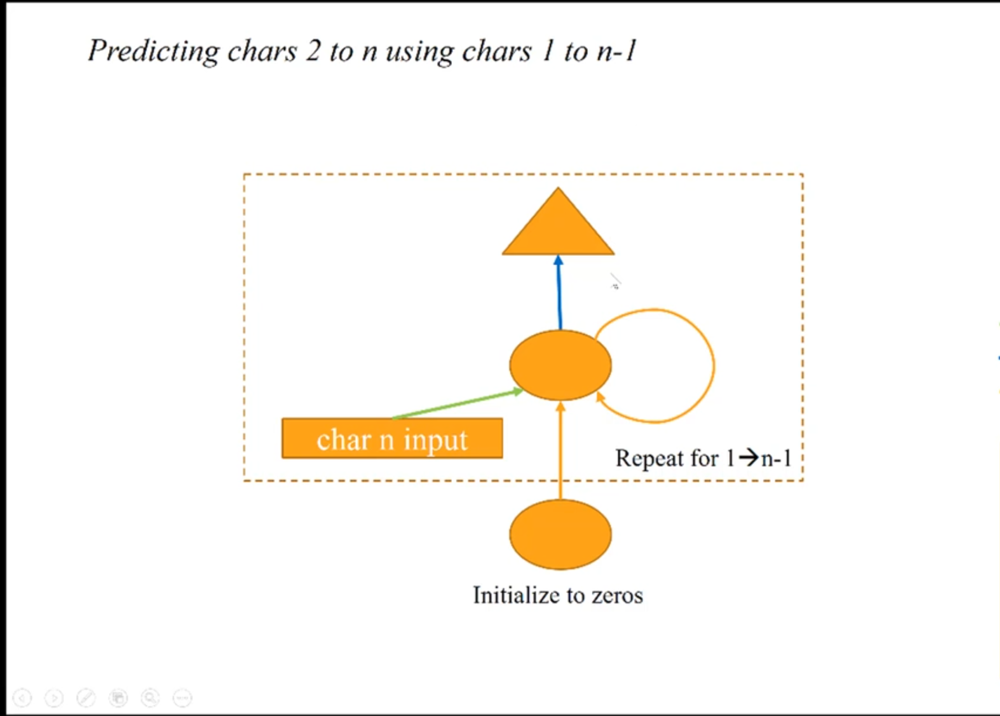

Fast.ai Lesson 6 Review
Matthew Emery [@lstmemery]
- Pseudolabeling Revisited
- Embeddings Revisited
- RNNs
- Theano/Tensorflow
Pseudolabeling Revisited
Embeddings Revisited
RNNs
Use cases for RNNs
- Anything that requires knowledge of long term structure
- Text data
Three Character Model

Input
char_indices = dict((c, i) for i, c in enumerate(chars))
indices_char = dict((i, c) for i, c in enumerate(chars))
Inputs and output
cs=3
c1_dat = [idx[i] for i in range(0, len(idx)-1-cs, cs)]
c2_dat = [idx[i+1] for i in range(0, len(idx)-1-cs, cs)]
c3_dat = [idx[i+2] for i in range(0, len(idx)-1-cs, cs)]
c4_dat = [idx[i+3] for i in range(0, len(idx)-1-cs, cs)]
This creates a list of numbers. We need a matrix. So we create an embedding
Embedding
n_facis a hyperparameter
def embedding_input(name, n_in, n_out):
inp = Input(shape=(1,), dtype='int64', name=name)
emb = Embedding(n_in, n_out, input_length=1)(inp)
return inp, Flatten()(emb)
Parameters: 3570
Input to Hidden Layer
n_hidden = 256
dense_in = Dense(n_hidden, activation='relu')
c1_hidden = dense_in(c1)
Parameters: 11008
Hidden to Hidden Layer
from keras.layers.merge import add as merge_add
dense_hidden = Dense(n_hidden, activation='relu')
c2_dense = dense_in(c2)
hidden_2 = dense_hidden(c1_hidden)
c2_hidden = merge_add([c2_dense, hidden_2]) # Element-wise sum
Parameters: 65792
Hidden to Output Layer
c3_dense = dense_in(c3)
hidden_3 = dense_hidden(c2_hidden)
c3_hidden = merge_add([c3_dense, hidden_3])
dense_out = Dense(vocab_size, activation='softmax')
c4_out = dense_out(c3_hidden)
Parameters: 21845
Nth Character Model
RNN forms:
- Unrolled Form (previous example)
- Recurrent Form (next example)
Note: Jeremy mentioned that Tensorflow does not have the ability to make recurrent form RNNs. This is no longer true. Use `tf.nn.dynamic_rnn`.

dense_in = Dense(n_hidden, activation='relu')
dense_hidden = Dense(n_hidden, activation='relu',
kernel_initializer="identity")
dense_out = Dense(vocab_size, activation='softmax')
Combining layers
hidden = dense_in(c_ins[0][1])
for i in range(1,cs):
c_dense = dense_in(c_ins[i][1])
hidden = dense_hidden(hidden)
hidden = merge_add([c_dense, hidden])
c_out = dense_out(hidden)
This is common architecture. So Keras already has a version of it.
Keras: SimpleRNN
model=Sequential([
Embedding(vocab_size, n_fac, input_length=cs),
SimpleRNN(n_hidden, activation='relu', recurrent_initializer='identity'),
Dense(vocab_size, activation='softmax')
])
By setting recurrent_initializer = identity means do nothing by default
Parameters of Dense layer: 22102
Sequential RNNs
Previously...
Now
The output of one step is the input of the next step
c_in_dat = [[idx[i+n] for i in range(0, len(idx) - 1 - cs, cs)]
for n in range(cs)]
c_out_dat = [[idx[i+n] for i in range(1, len(idx) - cs, cs)]
for n in range(cs)]
The input also changes
inp1 = Input(shape=(n_fac,), name='zeros')
hidden = dense_in(inp1)
outs = []
for i in range(cs):
c_dense = dense_in(c_ins[i][1])
hidden = dense_hidden(hidden)
hidden = merge_add([c_dense, hidden], mode='sum')
# every layer now has an output
outs.append(dense_out(hidden))
Eight outputs means eight binary cross entropies to manage
This is easy in Keras
model=Sequential([
Embedding(vocab_size, n_fac, input_length=cs),
SimpleRNN(n_hidden,
return_sequences=True,
activation='relu',
recurrent_initializer='identity'),
TimeDistributed(Dense(vocab_size, activation='softmax')),
])
Two differences
- return_sequences=True
- TimeDistributed wrapped around Dense
Some changes to Jeremy's Code
Migrated from Keras 1 to 2
Migrated from Python 2 to 3
Using a Tensorflow backend (instead of Theano)
Only important difference: Had to remove extra dimensions for some training
Stateful RNNs
We want to model long-term dependencies
The RNN needs to be aware of ALL of the previous sequence
This was impossible until the creation of Long-Short Term Memory
An LSTM replaces the hidden-to-hidden matrix with another neural net
LSTMs are difficult to parallelize. Training is slower
First Model
model=Sequential([
Embedding(vocab_size, n_fac, input_length=cs, batch_input_shape=(bs, 8)),
BatchNormalization(),
LSTM(n_hidden, return_sequences=True, stateful=True),
TimeDistributed(Dense(vocab_size, activation='softmax')),
])
Batch Normalization was required to get this model running
Parameters:
- 84[Input] * 42[Latent Factors] = 3612
- 42[Input] * 2 [Parameters] *2[Dimensions] =168
- 4 * ((42[Input]+1)*256[Output] + 256**2) = 306176
- 22102 = 256[Input] * [86]Output
Stacked RNN

model=Sequential([
Embedding(vocab_size, n_fac, input_length=maxlen),
LSTM(512, recurrent_dropout=0.2, return_sequences=True,
dropout=0.2, implementation=2, input_shape=(n_fac,)),
Dropout(0.2),
LSTM(512, dropout=0.2, recurrent_dropout=0.2,
return_sequences=True),
Dropout(0.2),
TimeDistributed(Dense(vocab_size)),
Activation('softmax')
])
This will take a long time to train but gives the best results we've seen so far
Theano RNN
Sparse Categorical Cross-entropy just converts integer to a one-hot encoding implicitly
We to make this explicit for Theano
model=Sequential([
SimpleRNN(n_hidden, return_sequences=True, input_shape=(cs, vocab_size),
activation='relu', recurrent_initializer="identity"),
TimeDistributed(Dense(vocab_size, activation='softmax')),
])
model.compile(loss='categorical_crossentropy', optimizer=Adam())
Theano
Manipulates tensors in the GPU
Automatic Differentiation
Need to declare upfront for computational graph
Used shared to claim an array for theano